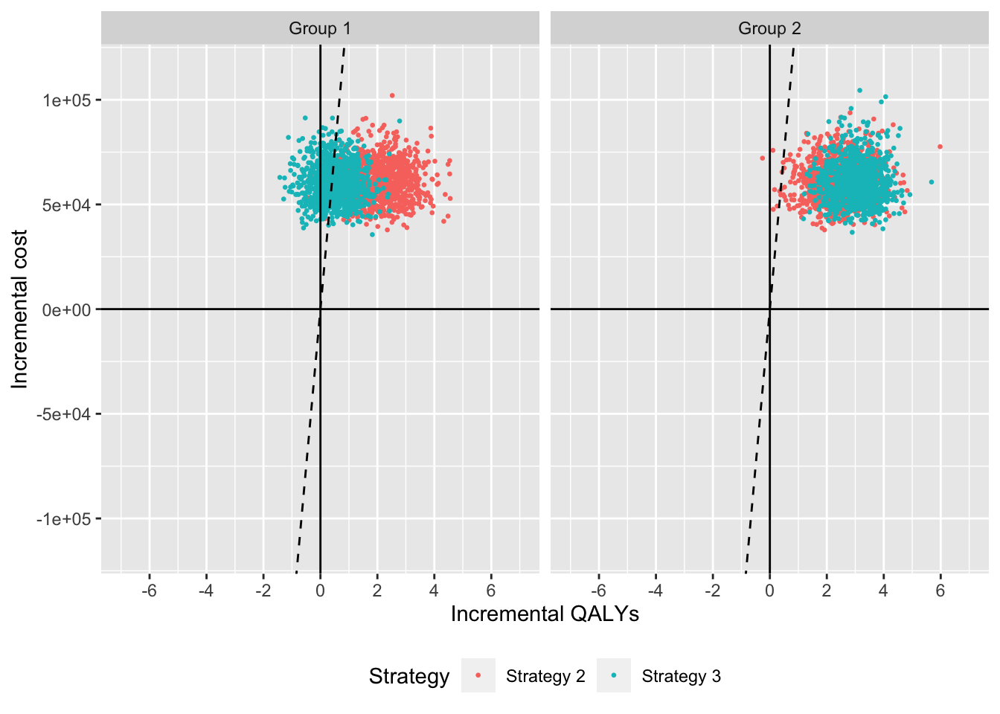

1 Background
Cost-effectivess analysis (CEA) is based on estimating the net monetary benefit (NMB). For a given subgroup \(g\) and parameter set \(\theta\), NMB with treatment \(j\) is computed as the difference between the monetized health gains from an intervention less costs, or,
\[ \begin{aligned} NMB_g(j,\theta) = e_{gj}\cdot k- c_{gj}, \end{aligned} \]
where \(e_{gj}\) and \(c_{gj}\) are measures of health outcomes (e.g. QALYs) and costs in subgroup \(g\) using treatment \(j\) respectively, and \(k\) is a decision makers willingness to pay per unit of health outcomes. The optimal treatment for a given subgroup is the one that maximizes the expected NMB,
\[ \begin{aligned} j^{*}_g = \text{argmax}_j E_{\theta} \left[NMB_g(j,\theta)\right]. \end{aligned} \]
For a pairwise comparison, treatment \(1\) is preferred to treatment \(0\) for given subgroup \(g\) if the expected incremental net monetary benefit (INMB) is positive; if \(E_\theta \left[INMB_g\right] > 0\) where the INMB in a particular subgroup is given by
\[ \begin{aligned} INMB_g(\theta) = NMB_g(j = 1, \theta) - NMB_g(j = 0, \theta). \end{aligned} \] Equivalently, treatment \(1\) is preferred to treatment \(0\) in subgroup \(g\) if the incremental cost-effectiveness ratio (ICER) is greater than the willingness to pay threshold \(k\),
\[ \begin{aligned} k > \frac{c_{g1} - c_{s0}}{e_{g1} - e_{g0}} = ICER_g. \end{aligned} \]
2 Probabilistic sensitivity analysis
Expected health outcomes and costs are subject to uncertainty. The standard methodology for quantifying the impact of parameter uncertainty on model outcomes is probabilistic sensitivity analysis (PSA). Uncertainty in the input parameters is propagated through the model by randomly sampling sets of input values from suitable probability distributions reflecting the uncertainty in those parameters. Probability distributions are determined according to the distributional properties of the statistical estimates, which, in turn, depend on the statistical techniques used and the distributions of the underlying data.
For each treatment strategy and subgroup, a PSA produces \(n\) random draws from the distribution of health outcomes and costs,
\[ \begin{aligned} e_{gj} &= [e_{gj}^1, e_{gj}^2, \dots, e_{gj}^n] \\ c_{gj} &= [c_{gj}^1, c_{gj}^2, \dots, c_{gj}^n]. \end{aligned} \]
Let’s say we have a model that generated costs and QALYs for three treatment strategies and two subgroups based on 1000 PSA samples.
## sample strategy grp cost qalys
## 1: 1 Strategy 1 Group 1 6.808115 7.984456
## 2: 2 Strategy 1 Group 1 6.997936 7.984085
## 3: 3 Strategy 1 Group 1 8.183247 8.221359
## 4: 4 Strategy 1 Group 1 7.423647 8.155250
## 5: 5 Strategy 1 Group 1 7.063846 8.292916
## 6: 6 Strategy 1 Group 1 7.234418 8.066187Commonly used health economic measures based on model outcomes obtained with a PSA can be calculated using the functions icea and icea_pw from the hesim package. The icea function summarizes results by taking into account each treatment strategy in the analysis, while the function icea_pw summarizes “pairwise” results in which each treatment is compared to a comparator.
We can use the icea function to summarize results from our data.table object of simulated output for a range of willingness to pay values. The most important input in icea is the data.table object (x) containing columns for simulation number (sim), treatment strategy (strategy), subgroup (grp), health outcomes (e), and costs (c). Users specify the names of the relevant columns in their output table as strings. The other relevant parameter is \(k\), which is a range of willingness to pay values to use for estimating NMBs.
library("hesim") ktop <- 200000 icea <- icea(ce, k = seq(0, ktop, 500), sample = "sample", strategy = "strategy", grp = "grp", e = "qalys", c = "cost")
icea produces means, 2.5% quantiles, and 97.5% quantiles for costs and efficacy.
print(icea$summary)
## strategy grp e_mean e_lower e_upper c_mean c_lower
## 1: Strategy 1 Group 1 8.004532 7.625347 8.399756 7.427476 6.134231
## 2: Strategy 2 Group 1 10.055709 8.448506 11.642793 60586.499697 45176.893995
## 3: Strategy 3 Group 1 8.510334 7.332195 9.708251 60757.113334 44415.464271
## 4: Strategy 1 Group 2 8.002205 7.597320 8.371528 7.368609 6.135822
## 5: Strategy 2 Group 2 10.467755 8.851752 11.956592 60696.563802 44094.863030
## 6: Strategy 3 Group 2 11.000691 9.725894 12.131825 60733.750804 44985.051180
## c_upper
## 1: 9.034617
## 2: 80647.903901
## 3: 79251.737042
## 4: 8.885084
## 5: 80046.703058
## 6: 82950.291507Likewise, we can use icea_pw to summarize the PSA when directly comparing the two treatment strategies (Strategy 2 and Strategy 3) to the comparator (Strategy 1).
icea_pw <- icea_pw(ce, k = seq(0, ktop, 500), comparator = "Strategy 1", sample = "sample", strategy = "strategy", grp = "grp", e = "qalys", c = "cost")
The same inputs are used as in icea except users must specify the name of the comparator strategy.
3 Cost-effectiveness plane
The cost-effectiveness plane plots the incremental effectiveness of a treatment strategy (relative to a comparator) against the incremental cost of the treatment strategy. The plot is useful because it demonstrates both the uncertainty and the magnitude of the estimates. Each point on the plot is from a particular random draw from the PSA.
Data for plotting a cost-effectiveness plane comes from the delta output generated from the icea_pw function, which, for each sampled parameter set and treatment strategy, estimates differences in costs, effectiveness, and any other variables specified in custom_varsrelative to the comparator. The dotted line in the plot is the willingness to pay line, with slope equal to the value of \(k\). For a given \(k\), points below the line are cost-effective while those above it are not.
head(icea_pw$delta)
## sample strategy grp ie ic
## 1: 1 Strategy 2 Group 1 1.497467 57687.97
## 2: 2 Strategy 2 Group 1 1.428877 65857.23
## 3: 3 Strategy 2 Group 1 3.184584 44830.68
## 4: 4 Strategy 2 Group 1 1.475885 64228.60
## 5: 5 Strategy 2 Group 1 1.045039 58613.55
## 6: 6 Strategy 2 Group 1 1.303221 45173.35library(ggplot2) ylim <- max(icea_pw$delta[, ic]) * 1.1 xlim <- ceiling(max(icea_pw$delta[, ie]) * 1.1) ggplot2::ggplot(icea_pw$delta, aes(x = ie, y = ic, col = factor(strategy))) + geom_jitter(size = .5) + facet_wrap(~grp) + xlab("Incremental QALYs") + ylab("Incremental cost") + scale_y_continuous(limits = c(-ylim, ylim)) + scale_x_continuous(limits = c(-xlim, xlim), breaks = seq(-6, 6, 2)) + theme(legend.position = "bottom") + scale_colour_discrete(name = "Strategy") + geom_abline(slope = 150000, linetype = "dashed") + geom_hline(yintercept = 0) + geom_vline(xintercept = 0)

4 Cost-effectiveness acceptability curves (CEAC)
4.1 Simultanous comparison
A useful summary measure for quantifying uncertainty is the probability that each treatment strategy is the most cost effective. For a particular subgroup, this is estimated from simulation output as the proportion of simulation draws that each strategy has the highest NMB.
library("ggplot2") library("scales") theme_set(theme_minimal()) ggplot2::ggplot(icea$mce, aes(x = k, y = prob, col = factor(strategy))) + geom_line() + facet_wrap(~grp) + xlab("Willingness to pay") + ylab("Probability most cost-effective") + scale_x_continuous(breaks = seq(0, ktop, 100000), label = scales::dollar) + theme(legend.position = "bottom") + scale_colour_discrete(name = "Strategy")

In group 1, Strategy 2 provides the greatest NMBs with high probability for almost all reasonable values of k. In group 2, the results are less certain, although Strategy 3 provides the greatest NMBs with a higher probability than Strategy 2.
4.2 Pairwise comparison
Output to produce a pairwise CEAC is generated from the icea_pw function.
The plot shows that, in subgroup 1, Strategy 2 has larger NMBs than Strategy 1 with very high probability for reasonable values of \(k\). Strategy 3 also has higher NMBs than Strategy 1 with probability over 1/2 for values of \(k\) larger than 120,500. In group 2, both Strategy 2 and Strategy 3 have higher NMBs than Strategy 1 for almost all values of \(k\), although this probability is larger for Strategy 2 than Strategy 3 when \(k\) is smaller.
ggplot2::ggplot(icea_pw$ceac, aes(x = k, y = prob, col = factor(strategy))) + geom_line() + facet_wrap(~grp) + xlab("Willingness to pay") + ylab("Probability most cost-effective") + scale_x_continuous(breaks = seq(0, ktop, 100000), label = scales::dollar) + theme(legend.position = "bottom") + scale_colour_discrete(name = "Strategy")

5 Cost-effectiveness acceptability frontier (CEAF)
One drawback of the CEAC is that the probability of being cost-effective cannot be used to determine the optimal treatment option. Instead, if a decision-makers objective is to maximize health gain, then decisions should be based on the expected net monetary benefit. The cost-effectiveness acceptability frontier (CEAF), which plots the probability that the optimal treatment strategy (i.e., the strategy with the highest expected NMB) is cost-effective, is appropriate in this context.
A CEAF curve can be easily created by using the best column to subset to the treatment strategy with the highest expected NMB for each willingness to pay value and group.
ggplot2::ggplot(icea$mce[best == 1], aes(x = k, y = prob, col = strategy)) + geom_line() + facet_wrap(~grp) + xlab("Willingness to pay") + ylab("Probability most cost-effective") + scale_x_continuous(breaks = seq(0, ktop, 100000), label = scales::dollar) + theme(legend.position = "bottom") + scale_colour_discrete(name = "Strategy")

6 Value of perfect information
One draw back of the previous measure is that it ignores the magnitude of cost or QALY gains. A measure which combines the probability of being most effective with the magnitude of the expected NMB is the expected value of perfect information (EVPI). Intuitively, the EVPI provides an estimate of the amount that a decision maker would be willing to pay to collect additional data and completely eliminate uncertainty. Mathematically, the EVPI is defined as the difference between the maximum expected NMB given perfect information and the maximum expected NMB given current information. In other words, we calculate the NMB for the optimal treatment strategy for each random draw of the parameters and compare that to the NMB for the treatment strategy that is optimal when averaging across all parameters. Mathematically, the EVPI for subgroup \(g\) is,
\[ \begin{aligned} EVPI_g &= E_\theta \left[max_j NMB_g(j, \theta)\right] - max_j E_\theta \left [ NMB_g(j, \theta)\right]. \\ \end{aligned} \]
The icea function performs the EVPI calculation across all simulation draws from the PSA and for a number of values of willingness to pay values \(k\). A plot by group of the the EVPI for different values of \(k\) is shown below. The kinks in the plot represent values of \(k\) where the optimal strategy changes.
ggplot2::ggplot(icea$evpi, aes(x = k, y = evpi)) + geom_line() + facet_wrap(~grp) + xlab("Willingness to pay") + ylab("Expected value of perfect information") + scale_x_continuous(breaks = seq(0, ktop, 100000), label = scales::dollar) + scale_y_continuous(label = scales::dollar) + theme(legend.position = "bottom")

We might also be interested in aggregating across subgroups. In particular, the total EVPI can be calculated as a weighted average of the group specific EVPIs,
\[ \begin{aligned} totEVPI &= \sum_{g=1}^{G} w_g EVPI_g, \end{aligned} \] where \(w_g \in (0, 1)\) is a weight denoting that proportion of the population represented by subgroup \(g\) and \(\sum_{g=1}^{G} w_g = 1\).
w_dt <- data.table(grp = paste0("Group ", seq(1, 2)), w = c(0.25, .75)) evpi <- icea$evpi evpi <- merge(evpi, w_dt, by = "grp") totevpi <- evpi[,lapply(.SD, weighted.mean, w = w), by = "k", .SDcols = c("evpi")] ggplot2::ggplot(totevpi, aes(x = k, y = evpi)) + geom_line() + xlab("Willingness to pay") + ylab("Total EVPI") + scale_x_continuous(breaks = seq(0, ktop, 100000), label = scales::dollar) + scale_y_continuous(label = scales::dollar) + theme(legend.position = "bottom")